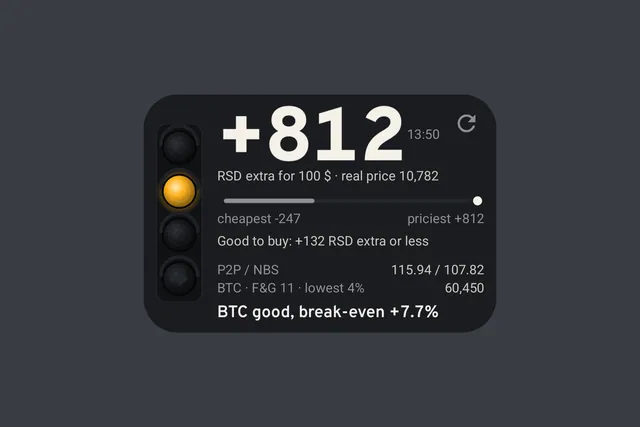
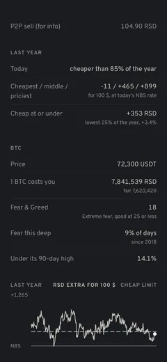
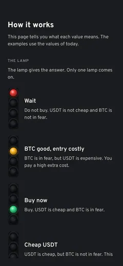

P2P Watch
Android widget that says when buying dollars and BTC with dinars is a good move
Shots
-

View larger1 Home screen widget: the lamp, dinars extra for 100 $, the year's range and the verdict (sample data) -

View larger2 Full screen: last year's range, the cheap limit, BTC numbers and the one-year chart (sample data) -

View larger3 How it works: what each lamp means (sample data)


P2P Watch watches the Binance P2P buy price for USDT in dinars against the official NBS dollar rate, and the BTC Fear & Greed Index. It shows the cost of entry as dinars extra for 100 dollars, ranks today's premium against the last year, and gives one verdict on a traffic-light home screen widget: buy now, BTC good but entry costly, cheap USDT, or wait. The phone checks every 15 minutes with no server and notifies only when the verdict changes. A full screen groups the numbers into Now, Last year and BTC, with a one-year chart of the daily premium and a page that explains every value.
Highlights
- Answer first: one lamp and one number on the widget, readable at a glance
- Cost of entry next to the BTC signal: dinars extra for 100 $ and the break-even move
- Entry is 'cheap' only in the lowest 25% of the last 365 daily premiums
- Three years of history seeded at install, then replaced by the app's own daily readings
- No server and no AndroidX: plain framework views, quiet notifications only on a verdict change
- Period
- NOV 2026
- Status
- in progress
- Kind
- app
- Stack
- Kotlin
- Android framework views
- RemoteViews (home screen widget)
- Scheduled background checks
- Binance P2P and spot APIs
- NBS rate
- Fear & Greed Index API
- Python (history seed)